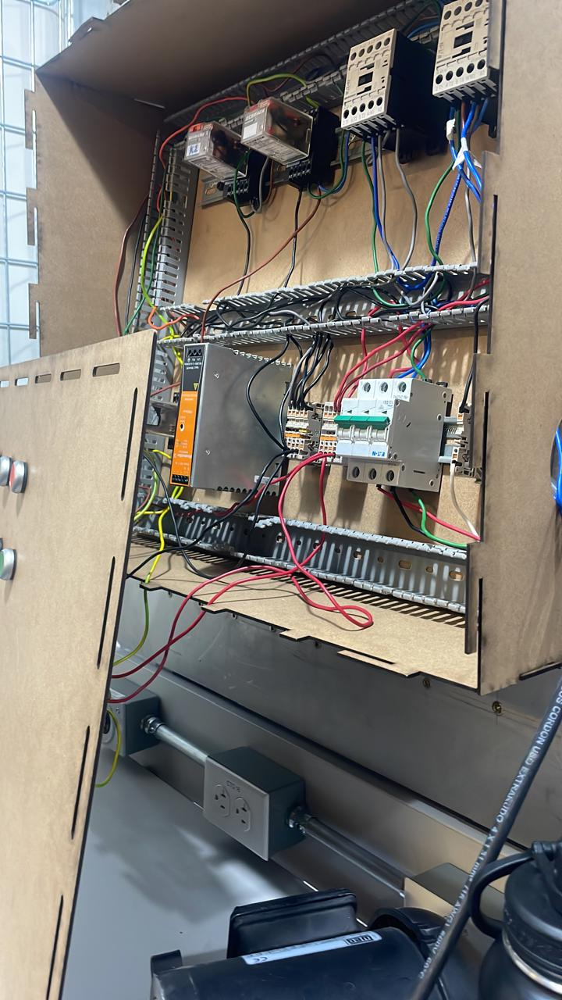
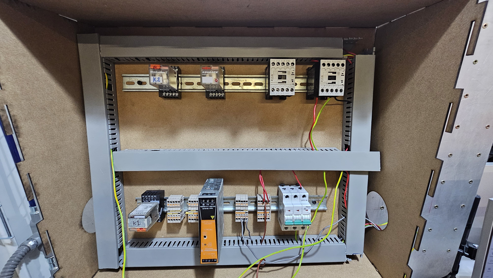

Práctica 4: Motores Automaticos Industriales
Objetivo
Conocer, investigar e identificar el funcionamiento de los motores DC, AC (monofásicos y trifásicos).
Introducción
Los motores eléctricos son dispositivos que convierten energía eléctrica en energía mecánica mediante el uso de campos magnéticos generados por corrientes eléctricas. Esta conversión permite el movimiento de ejes o elementos mecánicos, lo cual es esencial en aplicaciones industriales, comerciales, y domésticas. Existen varios tipos de motores eléctricos, como los de corriente continua (CC) y los de corriente alterna (CA), cada uno con características y aplicaciones específicas. Los motores eléctricos son fundamentales en la automatización y la producción industrial, ya que impulsan maquinaria, electrodomésticos, vehículos eléctricos, y diversos dispositivos tecnológicos.
Materiales
- Fuente de alimentacion
- Botones
- LED's
- Contactos
- Relevadores
- Motor
Desarrollo
Ejercicios de simulación
Armado de manera fisica
 Conclusiones
Los motores eléctricos son componentes esenciales en muchas industrias, desde maquinaria hasta vehículos eléctricos, debido a su versatilidad y eficiencia energética, lo que los hace ideales para reducir el consumo de energía. Su variedad de tipos permite adaptarse a necesidades específicas de precisión, velocidad y potencia, cubriendo una amplia gama de aplicaciones. Además, su diseño, especialmente en motores sin escobillas, asegura una larga vida útil y bajo mantenimiento, lo cual optimiza los costos operativos. Al mismo tiempo, su uso contribuye a la sostenibilidad al reducir las emisiones y apoyar la transición hacia tecnologías más limpias.
Volver a inicio